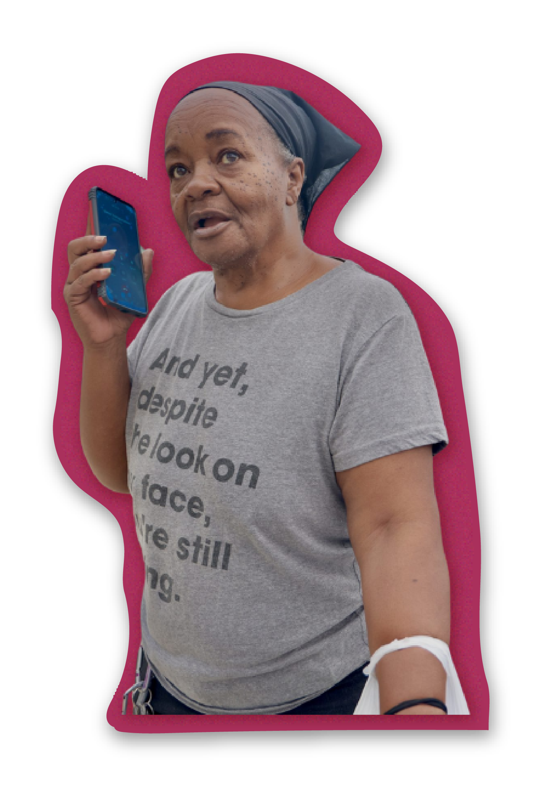
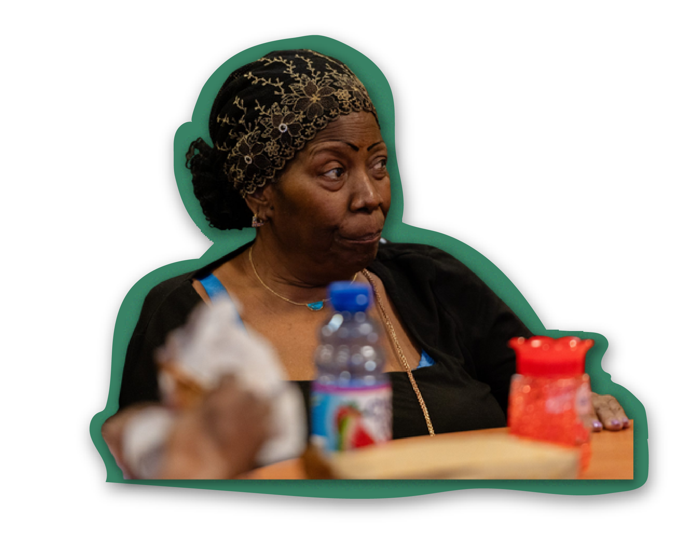
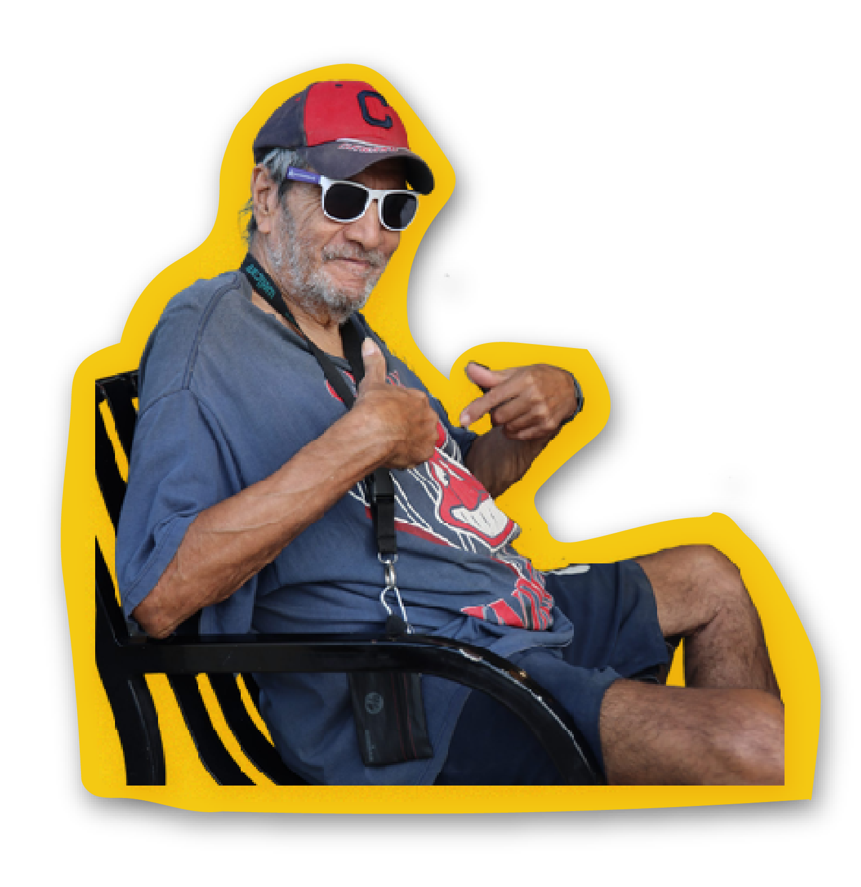

How Cleveland seniors are staying fed

Tips and resources by seniors, for seniors
For Cleveland seniors, high grocery prices are only part of the struggle to eat well. Many live on fixed incomes that don’t stretch as far as they once did. Others have trouble getting to the store or cooking as they lose mobility.
Over the past three months, I spoke with more than a dozen seniors about these challenges. Many were frustrated with SNAP. Some ages 55 to 64 are losing benefits because of new work requirements. Others receive only a small monthly benefit, especially since pandemic-era increases have ended. Read more here.
But I also heard plenty of hard-earned wisdom. Seniors shared their tips for shopping, cooking and eating well — or simply eating enough — as food costs rise and getting around becomes harder.
Here’s their advice, along with resources they recommended.
Mary’s tips


-
The Greater Cleveland Food Bank’s Waterloo location has good meat options, and good portion sizes.
-
The Animal Protective League gives away free cat and dog food every Tuesday at the food bank’s Waterloo location.
-
Don’t take RTA’s Paratransit with a buggy that has grocery bags inside it. They don’t allow it.
-
Senior Transportation Connection can take you to the grocery store or food bank. Just call 3 days ahead.
-
Wal-Mart has some affordable gluten-free options.
Anna’s tips


-
Check whether you can get an “over-the-counter” card through your health insurance plan that can pay for groceries.
-
Try an electric can opener if opening cans is getting more difficult as you age.
Mario’s tips


-
Crockpot meals can be delicious and simple to make, especially if you want to avoid standing for long periods of time.
-
Volunteering at local food pantries may mean you get sent home with extras.
-
Check if your health insurance plan allows you to earn points for going to doctor’s appointments that can be redeemed for gift cards or rewards.
Patricia’s tips


-
Instacart is a service that will deliver groceries to your home. For people who use SNAP, it offers a half-price membership at $4.99 a month for one year.
-
Sign up for a monthly free senior box through the Greater Cleveland Food Bank. The food is mostly canned goods and other non-perishables. It often includes proteins like beans.
Michael’s tips


-
Check out home-delivered meal programs through community centers and nonprofits. The meals Michael receives, through St. Martin de Porres family center, are free and nutritious.
Brenda’s tips


-
Senior centers often offer breakfast or lunch to seniors for free, though they may not always be hot meals.
Leonard’s tips


-
Farm House Food Distributors on Woodland offers wholesale prices on cases of meat and fish to the public.
-
Grow your own vegetables when you can — it’s cheaper and free of chemicals.
Looking for resources? Check these out:
Food
Greater Cleveland Food Bank
Looking for a food giveaway near you? Call (216) 738-2067 or (855) 738-2067. The Greater Cleveland Food Bank can share free food options near you, including food giveaways and hot meal programs.
You can also call these numbers to find locations that give out “senior boxes” or host “senior markets.” Senior boxes contain shelf-stable food and are passed out monthly to low-income seniors. Senior markets distribute fresh produce to senior-specific locations, like apartment complexes or senior centers.
211
Call 211 to get a list of food giveaways, hot meal programs and SNAP assistance near you.
Assistance with SNAP
Cuyahoga County Job and Family Services
Residents can apply for SNAP online or on the phone at (844) 640-6446. Avoid calling on Mondays and at lunch hours to reduce wait times. Residents can also pick up applications on-site and drop them off in-person at the following locations:
- Virgil E. Brown
1641 Payne Ave.
Cleveland, Ohio 44114 - Quincy Place
8111 Quincy Ave.
Cleveland, Ohio 44104 - Jane Edna Hunter
3955 Euclid Ave.
Cleveland, Ohio 44115
Greater Cleveland Food Bank
Call (216) 738-2067 or (855) 738-2067. The Greater Cleveland Food Bank has a full-time staff to help individuals apply for SNAP, Medicaid, Medicare Savings and other benefits.
Cleveland libraries
Library staff at Cleveland public libraries can help residents apply for SNAP by faxing documents to the county’s Job and Family Services department and assisting with technology questions. Read more about what librarians can and can’t do here.
Home-delivered meals
Western Reserve Area Agency on Aging
The agency distributes federal funding to local providers across Cuyahoga and other nearby counties that deliver meals to people who are 60 and over. The meals are free, though donations are optional. Seniors with the greatest economic, social and physical needs are prioritized, but there are no income limits on who can receive these meals.
Call (800) 626-7277 or (216) 621-0303 to request assistance. Seniors will likely be directed to the senior center, nonprofit or government agency nearest them that pass out meals.
Benjamin Rose Institute on Aging
The Benjamin Rose Institute offers meals on wheels deliveries to Cuyahoga County seniors who are unable to shop for or prepare meals independently. The meals are free for residents over 60. Call (216) 373-1994 or email intake@benrose.org to request service. There is currently a waitlist for the program.
Cuyahoga County’s program for seniors not on Medicaid
The Cuyahoga County Options for Independent Living program offers home-delivered meals to residents who are over 60 with limited income and who do not qualify for Medicaid. The program can offer 20 meals each month for $5 a month. Call (216) 420-6700 if interested. There is currently a waitlist for the program.
Transportation
Senior Transportation Connection
The nonprofit offers two rides a week (one round trip) for Cleveland seniors 60 and older who have limited transportation. Rides in the city of Cleveland are free and $1.25 each way for rides outside the city limits. Rides outside of Cleveland are for medical purposes only. A 10-mile limit exists for all trips.
Call (216) 664-2833 to sign up.
RTA Paratransit
RTA’s Paratransit service will provide door-to-door bus service for residents with disabilities. Applications are available online. Residents can also call (216) 566-5124 to get an application mailed to them. Residents can call that same number if they need assistance completing the application. RTA’s main office at 1240 W. 6th St. also has applications.